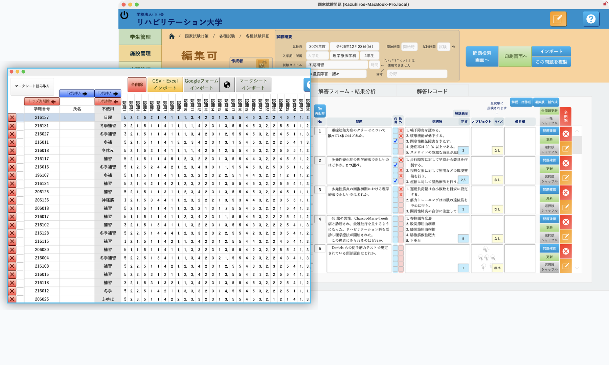
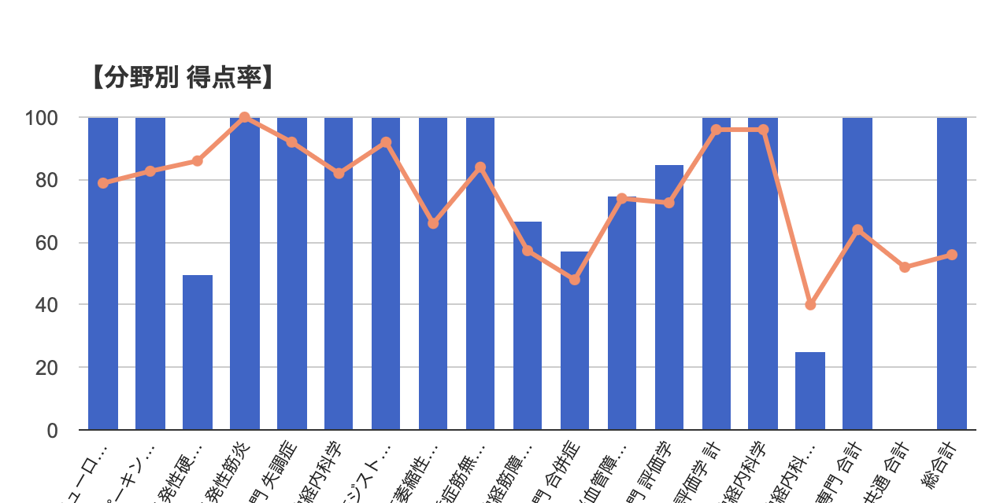
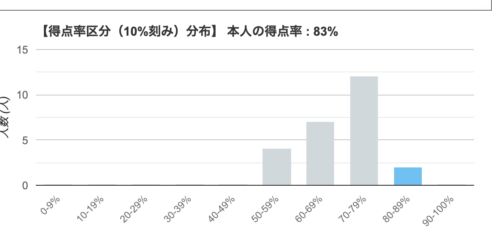
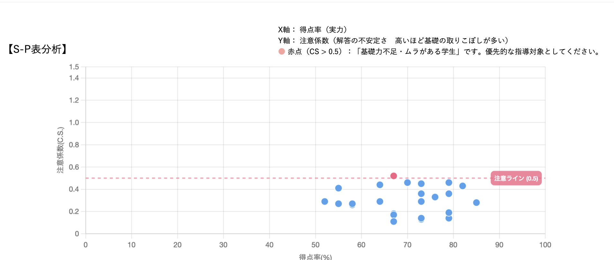
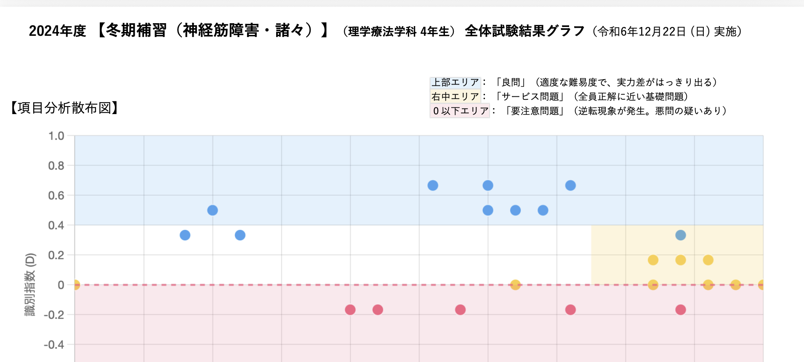
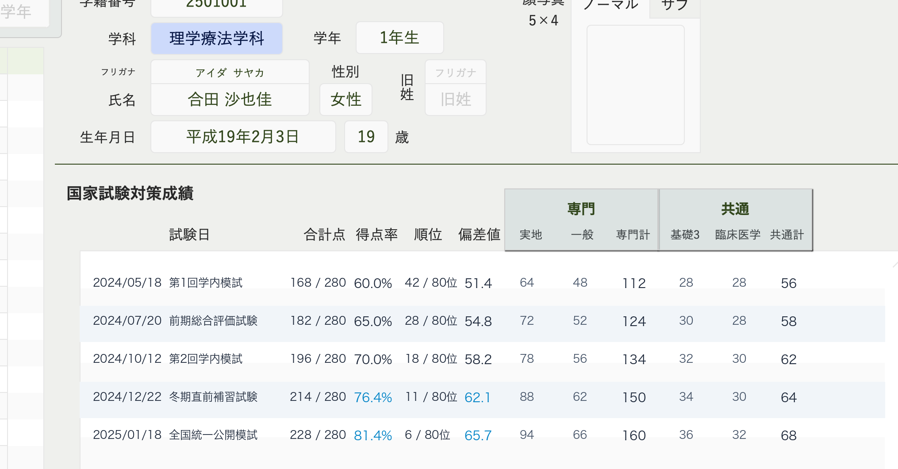

by Creative System Design
学生には合格への確信を。
教員には指導のゆとりと確実さを。
大量の過去問データの一元管理から、自在な試験作成・印刷、そして特許出願の「多次元リスク分析×LLM個別指導」まで。 教員の業務負担を劇的に削減し、学生一人ひとりの真の弱点克服と全員合格を強力にバックアップします。


過去問整理・自在な試験作成
科目×分野×大中小項目で過去問を瞬時抽出。縦横レイアウトや図の自動調整で問題用紙をPDF即時出力。
特許出願 多次元リスク分析
S-P表分析×推奨選択肢リスク判定。高得点層に潜む「禁忌肢リスク」「知識の死角」を徹底可視化。
AI個別指導・教員レポート
AIが学生の思考の癖を言語化し自律復習を促進。指導が必要な学生リストと授業改善案を自動生成。
「知識の穴を残さない」 データとAIで導く自律学習サイクル
単なる過去問の丸暗記から「思考プロセスの最適化」へ。学生自身が弱点を正確にメタ認知し、最短距離で合格圏へ到達します。
直感的な演習・解答データ集約
学外模試や校内定期試験の解答データをスムーズに集約。PC/iPadでのWeb即時演習・解答からマークシートOCR取込まで幅広く対応します。

自動採点 ＆ 分野・大中小項目集計
提出と同時に全自動で採点。科目・分野・大中小項目ごとの正答率や学年偏差値推移を瞬時に集計し、レーダーチャートで可視化します。

推奨選択肢 ＆ 禁忌肢リスク判定
単なる正誤だけでなく「どの選択肢を選んだか」まで多次元分析。高得点層に潜む危険な知識の偏りや禁忌肢選択リスクを早期発見。

AI個別アドバイス ＆ 克服シート出力
生成AIが学生一人ひとりの思考プロセスを言語化し、今週やるべき具体的学習アクションを提案。自律的な弱点克服を強力支援。


ボトルネック：神経内科学全般 (4%)
多発性硬化症・筋ジストロフィーの禁忌事項をノートに整理し、伝導路・小脳機能を重点復習。
教員の業務負担を85%削減し、「指導」に集中できる環境へ
過去問の再編集から試験作成・レイアウト組版、多次元データ分析、補講対象者の抽出まで直感操作で完結。
自在な試験作成 ＆ 問題用紙PDF出力
科目・分野・出題項目を指定して過去問を瞬時に抽出。縦横2段組や図表のサイズ調整も自動化され、本番仕様の問題用紙を即時PDF出力。

S-P表 多次元分析 ＆ 注意喚起マトリクス
学生(S)と問題(P)の連関マトリクス分析により、「努力不足」「ケアレスミス」「悪問・難問」を即座に分類特定。指導の精度を飛躍的に高めます。

指導者向けマネジメント・ダッシュボード
学年全体の概念誤解傾向や要個別指導学生をワンクリックで抽出。補講計画の策定や保護者・学生面談の資料作成を強力に支援します。


学籍番号 216124（CS: 0.52）
ケアレスミス・基礎誤答パターンを個別抽出し面談指導を支援。
学生カルテ・年次成績推移の一元管理
入学時から国試直前までの模試推移、臨地実習評価、出欠・面談記録を一元統合。貴校独自の運用に合わせたカスタマイズも自在。

導入で得られる3つの劇的インパクト
教員の残業・試験作成ストレスを劇的に解消しながら、特許分析データに基づいた確実な全員合格指導を実現します。
死角のない個別弱点克服とLLM自律学習で合格圏外層をゼロへ引き上げ。
過去問抽出、印刷組版、自動採点、成績表作成の全工程をワンストップ化。
点数だけでは見抜けない「誤答の質」を暴き、本番での思わぬ不合格を防止。
柔軟な運用基盤（FileMaker × クラウド）
校内オンプレミス運用からAWS/クラウド共有、教員のiPad端末利用まで柔軟に対応。学校固有の評価項目やカリキュラムに合わせた個別カスタマイズ開発も可能です。
多彩な医療系専門職の国家試験に対応
過去問データや学科構成を確認
大中小項目分類を自動マッピング
先生方向けレクチャーの実施
即時採点・克服シート出力
特許出願の独自技術
特願2025-265873 模試解析
手厚い導入・移行支援
過去問投入から専門伴走
高信頼セキュリティ
暗号化・厳格な学籍保護
貴校の過去問・模試データで実際の分析画面をお試しいただけます
最短3営業日でトライアル環境をご用意。お気軽にお問い合わせください。